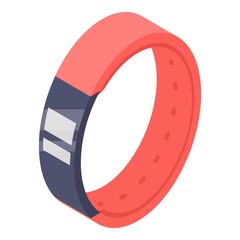

COMPRAR NUNCA FUE TAN FÁCIL
Hacé que comprar un producto sea rápido y fácil.
Herramientas
Evaluador de alternativas
¿Querés comprar un celular y no sabés qué opción elegir? Indicá qué te importa y te recomendamos la mejor alternativa.

Evaluador de marcas
¿Querés ver qué marca es la mejor en un producto? Mirá cómo se posiciona cada marca.
Productos
Ambas herramientas sirven para estos productos:
